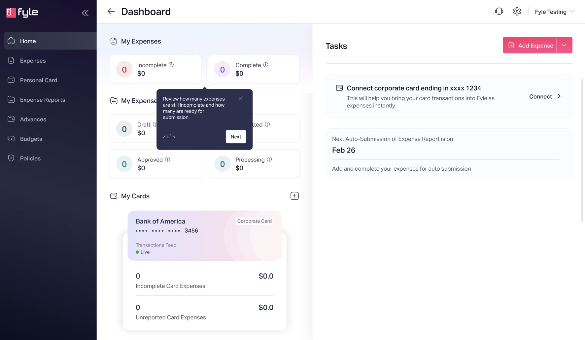
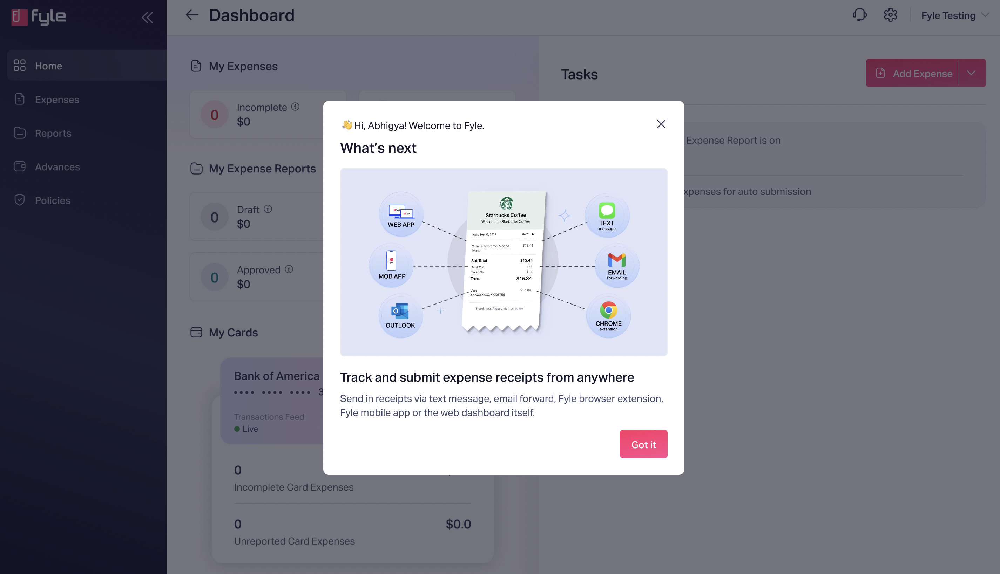

Fyle
Spender Onboarding
Designing a self-serve spender onboarding at Fyle through pragmatic leadership.
Fyle is an expense management platform that streamlines the entire process from
submitting receipts to reimbursement. It helps businesses efficiently handle receipt collection,
approval workflows, compliance verification, and accounting integration.
After successfully redesigning our admin onboarding flow, we naturally turned our attention to
spenders—employees who submit expenses.
Problem Discovery
The journey to improving spender onboarding wasn't as straightforward as we initially thought. It
began as a natural extension of our admin onboarding work , but the full scope of the problem
revealed itself through parallel discovery:
- During admin onboarding usability testing, we unexpectedly observed that spenders were
struggling with fundamental concepts — what is expense report, how does it work, creating expenses manually etc.
- Simultaneously, our data revealed concerning patterns: users weren't opting into text message
receipts or connecting their payment cards—core features that drove our platform's value.
- We noticed spenders ignored tasks on the homepage and many defaulted to manual uploads, making
their experience cumbersome.
Beyond these immediate issues, we recognized that fixing spender onboarding would improve activation & retention
aligning with Fyle’s larger business goals for PLG.
My Role
Working closely with the Product Manager, I:
- Led the exploratory design process to identify the key friction points
- Mapped the complete user journey from signup to product usage
- Brought consistency to the visual language and experience
- Onboarded and mentored a designer who would execute the plan
- Guided the team through thinking about different edge cases
- Created opportunities for the designer to present to leadership
Beyond design execution, I worked to influence leadership buy-in and align the initiative with
long-term product goals.
Approach & Iterations
Without formal frameworks, we relied on practical problem-solving and quick learning cycles.
I've covered core flows here instead of end to end flow.
Iteration 1: Exploring Tooltip Guides
Our first attempt was straightforward: use tooltips to introduce spenders to the interface,
explaining terminology like expenses, reports, and policies etc for all modules progressively. Testing quickly revealed this wasn't
working—users instinctively closed tooltips and preferred to explore on their own. The approach lacked engagement.

A sample tooltip walkthrough screen
 Another sample tooltip walkthrough screen for a different module
Another sample tooltip walkthrough screen for a different module
Influencing the product strategy
After this, we transitioned to a new quarter and henceforth to a new roadmap as well with revised strategic decisions, bringing this initiative close to being dropped.
I advocated for its long-term value. I emphasized how this initiative would strengthen Fyle's embedded offering business, providing value to both the spender and the business.
Iteration 2: Exploring Sample Expense
We explored a sample expense to help spenders visualize what an expense looks like. However,
discussions with engineering revealed practical challenges:
- How would auto-submission rules handle the sample?
- Would sample expenses need to be auto-deleted?
- Would dummy amounts impact report totals?
- Could this approach create confusion for users?
- How would we show sample status?
The complexity outweighed the benefits, leading us to pivot.
 Exploration of sample expense
Exploration of sample expense
Iteration 3: Prioritizing Core Actions
Stepping back, we reassessed what truly defined value for a spender - it is the expense creation.
The faster way of creating the expense is sending receipts via SMS. For this, user needs to conenct the card and opt into the text message.
Data showed users weren't
entering their mobile number and card details, delaying access to our most valuable
feature—automated receipt tracking.
We reivestigated onboarding of other products and considered incorporating the learnings from Slack's onboarding.
Unlike others, Slack help user creating a workspace before even they use the product. User takes action before even exploring the product.
This was our takeway.
Key strategies
We redesigned the onboarding flow to prioritize these two actions:
- Simplified card connection to focus only on Visa and MasterCard
- Help users in opting into the text message.
Post onboarding, we decided to welcome the user and help them understand the different ways to send receipts to Fyle and how Fyle takes care of the rest.
Alongside, we de-prioritized a few other actions intentionally. The intention was to start small.
But...
The valid questions we came up with is, why a spender would like to connect a card or opt into the text message?
What is the motivation? We needed to explain the value - It was evident.
After a few variations around layout, structure and copy, we finalised the following version for our two most
important actions.
Core flows
- User accepts the invite from Admin
- User logs in
-
User lands on the connect card flows
 Connect card UI
Connect card UI
 Opt in to text message UI
Opt in to text message UI

The welcome screen
Here, I've represented the core flows, whereas our end-to-end flow covered various edge cases. To give you a sense, this is how our Figma file looked during handoff.

Impact
The redesigned onboarding dramatically improved key metrics:
- Time to opt into text-based receipts: 12 days → 2 minutes
- Card connection time: 488 hours → 12 minutes
Beyond short-term activation, this onboarding flow laid the foundation for a scalable self-serve
model, reducing customer support dependency and improving long-term retention.
As next step, We extended the onboarding to the Mobile App Platform.
Key Learnings
On Design Process
- In small organizations, pragmatic exploration often yields better results than rigid frameworks.
- The first approach rarely works, but each attempt teaches valuable lessons.
- Simplicity consistently outperforms complexity in driving user adoption.
On Design Leadership
- Advocating for user value sometimes means fighting to keep initiatives alive.
- Mentorship happens in the trenches—guiding others through edge cases and real-world constraints.
- Creating opportunities for team members to present to leadership builds their confidence and
visibility.
On Decision Making
All our decisions balanced four key considerations:
- User value: How would this improve the spender experience?
- Business impact: How would this affect our key metrics?
- Technical feasibility: What was practically possible with our resources?
- Strategic alignment: How did this support our product direction?
This project reinforced that great product design doesn't require extensive frameworks—it requires
clear focus on user needs, business outcomes, and practical solutions. In a small organization, the
ability to navigate ambiguity, learn quickly, and execute pragmatically is often more valuable than
perfect process adherence.